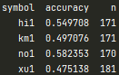

Introduction
In the prior article, we discussed multivariate time series forecasting by using LSTM model, which does not have good predictability to forecast intraday high low and return on the next day , therefore in this article we are going to use different data and a random forest to predict intraday day direction that has more than 50% out-of-sample accuracy . We will perform a backtest on the signal generated by our model, examine the profitability of the new model.
Data
We will use daily data to train and test our model, the training set contains 941 observations, starting from 20170815 to 20210610, the testing set contains 171 observations.
Before we plug our data into our random forest, we have to pre-process our data. The features we are going to use to predict intraday direction are quite simple and intuitive , which only contains lagged log return and lagged intraday volatility on that market.
The data above contains y1 and hl1 which means lag 1 intraday log return and lag 1 intraday log volatility, y is our target, the intraday direction of that futures in the next day.
Model
We will use RandomForestClassifier to fit our data and predict the direction on various markets. Before we make the final prediction, we will search the hyperparameters using GridSearchCV to cross-validate our model in the training set, then we pick the one which has the highest cross-validated score as our final model. Those are the routine of simple machine learning, therefore in this article, we will skip those details. We will repeat the process on multiple futures which are Heng Seng Index, Xina50 Index, Nikkei 225 Index, and Kospi 200 Index.
Result
We have over 170 days as our testing period, the result above indicate that the prediction accuracy in Hang Seng Index and Nikkei 225 futures are over 50%, however, in Kospi 200 the model is close to random guess. For the model in Xina50, we did some model ensembling, therefore 0 will appear on the final prediction, accuracy is not the best matric for this market.
When we look at the trading performance, Xina50 have the highest t-value, while the mean profit in term of index points in Hang Seng Index and Kospi 200 are not statistically significant. 
After we calculate the trading profit, all of them have a positive return, and those returns can replicate in real trading, we can claim that our model has prediction power in the out-of-sample period.
Conclusion
This article explores the predictability of random forest in the futures market, we can forecast the direction of intraday movement by using some simple lagged data, the result in some markets are statistically significant, but still, there are a lot more we can investigate, for example how to handle the false positive and false negative. In the future article, we can test the performance of those strategies we can use when the market goes against our prediction.